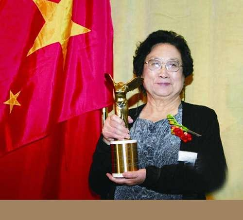

屠呦呦
屠呦呦，女，汉族，中共党员，药学家。1930年12月30日生于浙江宁波，1951年考入北京大学，在医学院药学系生药专业学习。1955年，毕业于北京医学院（今北京大学医学部）。毕业后曾接受中医培训两年半，并一直在中国中医研究院（2005年更名为中国中医科学院）工作，期间前后晋升为硕士生导师、博士生导师，现为中国中医科学院的首席科学家、中国中医研究院终身研究员兼首席研究员，青蒿素研究开发中心主任，博士生导师、药学家，诺贝尔医学奖获得者。
1人物简介
屠呦呦多年从事中药和中西药结合研究，突出贡献是创制新型抗疟药青蒿素和双氢青蒿素。1972年成功提取到了一种分子式为C15H22O5的无色结晶体，命名为青蒿素。2011年9月，因为发现青蒿素——一种用于治疗疟疾的药物，挽救了全球特别是发展中国家的数百万人的生命获得拉斯克奖和葛兰素史克中国研发中心“生命科学杰出成就奖” 。2015年10月，屠呦呦获得诺贝尔生理学或医学奖，理由是她发现了青蒿素，这种药品可以有效降低疟疾患者的死亡率。她成为首获科学类诺贝尔奖的中国人。
屠呦呦是第一位获得诺贝尔科学奖项的中国本土科学家、第一位获得诺贝尔生理医学奖的华人科学家。是中国医学界迄今为止获得的最高奖项，也是中医药成果获得的最高奖项。
2017年1月9日，屠呦呦获得2016年度国家最高科学技术奖。2018年12月18日，党中央、国务院授予屠呦呦同志改革先锋称号，颁授改革先锋奖章。 2019年5月，入选福布斯中国科技50女性榜单。
2研究经历
1955年，毕业于北京医学院（今北京大学医学部）药学系，分配在卫生部中医研究院（现中国中医科学院）中药研究所工作；
1956年，全国掀起防治血吸虫病的高潮，她对有效药物半边莲（Lobelia chinensis Lour.）进行了生药学研究；后来，又完成了品种比较复杂的中药银柴胡（Stellaria dichotonia L.var.lanceolata Bge.）的生药学研究。这两项成果被相继收入《中药志》。
1959-1962年，参加卫生部全国第三期西医离职学习中医班，系统地学习了中医药知识，深入药材公司，向老药工学习中药鉴别及炮制技术，并参加北京市的炮制经验总结，从而对药材的品种真伪和道地质量，以及炮制技术有了进一步的感性认识。后屠呦呦参加了卫生部下达的中药炮制研究工作，是《中药炮炙经验集成》一书的主要编著者之一。
1969年1月开始，屠呦呦领导课题组从系统收集整理历代医籍、本草、民间方药入手，在收集2000余方药基础上，编写了640种药物为主的《抗疟单验方集》，对其中的200多种中药开展实验研究，历经380多次失败，利用现代医学和方法进行分析研究、不断改进提取方法，终于在1971年获得青蒿抗疟发掘成功。
1972年，屠呦呦和她的同事在青蒿中提取到了一种分子式为C15H22O5的无色结晶体，一种熔点为156℃～157℃的活性成份，他们将这种无色的结晶体物质命名为青蒿素。青蒿素为一具有“高效、速效、低毒”优点的新结构类型抗疟药，对各型疟疾特别是抗性疟有特效。1986年“青蒿素”获得了一类新药证书（86卫药证字X-01号）。1979年获“国家发明奖”。
3获得诺奖
2015年10月5日，瑞典卡罗琳医学院在斯德哥尔摩宣布，中国女药学家、中国中医科学院中药研究所首席研究员屠呦呦与威廉·坎贝尔和大村智获2015年诺贝尔生理学或医学奖。这是中国科学家因为在中国本土进行的科学研究而首次获诺贝尔科学奖，是中国医学界迄今为止获得的最高奖项。理由为她发现了青蒿素，这种药品可以有效降低疟疾患者的死亡率。
2015年12月7日下午，2015年诺贝尔生理学或医学奖得主、中国科学家屠呦呦在瑞典卡罗林斯卡医学院用中文发表《青蒿素的发现：传统中医献给世界的礼物》的主题演讲。